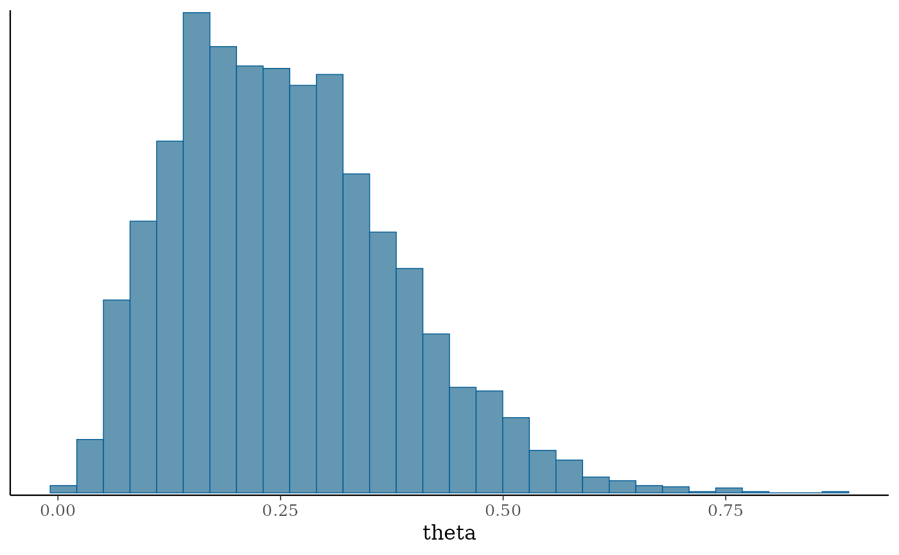

Create a new CmdStanModel object from a file containing a Stan program
or from an existing Stan executable. The CmdStanModel object stores the
path to a Stan program and compiled executable (once created), and provides
methods for fitting the model using Stan's algorithms.
If a Stan program with a pre-existing executable beside it is passed to
cmdstan_model() it checks whether the executable was built with the
options supplied and rebuilds it if not. If just an executable is provided,
then it uses the executable as is.
compile_stan_file() runs the same build, or the same check of an
existing executable, but returns the path to the executable instead of a
CmdStanModel object. It is for code that builds an executable in one
place and uses it in another, for example an R package that compiles its
Stan programs when it is installed and later calls
cmdstan_model(exe_file = ).
Usage
cmdstan_model(
stan_file = NULL,
exe_file = NULL,
quiet = TRUE,
dir = NULL,
pedantic = FALSE,
include_paths = NULL,
user_header = NULL,
cpp_options = NULL,
stanc_options = NULL,
force_recompile = NULL
)
compile_stan_file(
stan_file,
quiet = TRUE,
dir = NULL,
pedantic = FALSE,
include_paths = NULL,
user_header = NULL,
cpp_options = NULL,
stanc_options = NULL,
force_recompile = NULL
)Arguments
- stan_file
(string) The path to a
.stanfile containing a Stan program. The helper functionwrite_stan_file()is provided for cases when it is more convenient to specify the Stan program as a string. Ifstan_fileis not specified thenexe_filemust be specified. Usedirto choose where the executable for a Stan program is built.- exe_file
(string) The path to an existing Stan model executable to use instead of a Stan program. The executable is used as is: none of the build arguments below can be specified. Some
CmdStanModelmethods like$code()and$print()also will not work.stan_fileandexe_filecannot both be supplied.- quiet
(logical) Should the verbose output from CmdStan during compilation be suppressed? The default is
TRUE, but if you encounter an error we recommend trying again withquiet=FALSEto see more of the output. In an interactive session a message says whether the executable was reused or rebuilt, and why. Withquiet = FALSEit is printed in every session, so a batch job's log shows whether the model was recompiled.- dir
(string) The path to the directory in which to store the CmdStan executable. The default is the same location as the Stan program.
- pedantic
(logical) Should pedantic mode be turned on? The default is
FALSE. Pedantic mode attempts to warn you about potential issues in your Stan program beyond syntax errors. For details see the Pedantic mode section in the Stan User's Guide. The check runs whether or not the executable is rebuilt. To check a program without building it usecheck_syntax_stan_file().- include_paths
(character vector) Paths to directories where Stan should look for files specified in
#includedirectives in the Stan program. Relative paths are resolved against the working directory when the model object is created and stored as absolute paths, so subsequent changes to the working directory do not affect them. When the program contains#includedirectives and no paths are given, the program's own directory is used.- user_header
(string) The path to a C++ file (with a
.hppextension) to compile with the Stan model.- cpp_options
(list) Options for building the model's executable, written as
list(NAME = value), for examplelist(stan_threads = TRUE)to build with threading orlist(stan_no_range_checks = TRUE)to skip the range checks on indexing. The names are CmdStan's makefile variables (stan_threads,stan_opencl,stan_no_range_checks,stan_cpp_optims,stan_mpi,CXXFLAGS, etc.), in any casing.TRUEturns an option on andFALSEorNULLturns it off, even whenmake/localturns it on. The options apply to this model only, and each one replaces the same variable's setting inmake/local, so, e.g.,list(CXXFLAGS = "-Wall")drops any flags thatmake/localadds toCXXFLAGS. Settings meant for every model belong inmake/localinstead, seecmdstan_make_local(). Seestan_build_info()for an example of setting options and checking what the executable was built with, and the Stan case study Reduce Sum: A Minimal Example for using threading.- stanc_options
(list) Options for stanc, the Stan compiler, when it turns the program into C++. Write a flag by name without the leading hyphens, as
list("O1")orlist(O1 = TRUE)to turn on stanc's optimizations, and an option that takes a value aslist(option = "value").list(O1 = FALSE)leaves the flag out, the same as not mentioning it. The Using the Stan Compiler chapter of the Stan User's Guide lists the options. They apply to this model only, and a flag set here replaces the same flag inmake/local'sSTANCFLAGS. Five flags that CmdStanR sets from its own arguments can't be given here:include-paths(useinclude_paths),warn-pedantic(pedantic),allow-undefined(user_header),use-opencl(cpp_options = list(stan_opencl = TRUE)) andname(taken from the name of the Stan file). Seestan_build_info()for an example of checking what the executable was built with.- force_recompile
(logical) Should the model be recompiled even if the executable was built from this program with these options? The default,
NULL, defers to thecmdstanr_force_recompileglobal option, and toFALSEwhen that is unset. Useforce_recompile=TRUEfor changes CmdStanR cannot see: a changed toolchain, a CmdStan modified in place, a header the user header includes, or a makefile thatmake/localincludes.
Value
cmdstan_model() returns a CmdStanModel object.
compile_stan_file() returns the path to the executable.
See also
install_cmdstan(),
$check_syntax()
The CmdStanR website (mc-stan.org/cmdstanr) for online documentation and tutorials.
The Stan and CmdStan documentation:
Stan documentation: mc-stan.org/users/documentation
CmdStan User’s Guide: mc-stan.org/docs/cmdstan-guide
Examples
# \dontrun{
library(cmdstanr)
# If you installed CmdStan with install_cmdstan() the path is already set.
# Otherwise point CmdStanR at your installation with set_cmdstan_path().
cmdstan_path()
#> [1] "/home/runner/.cmdstan/cmdstan-2.40.0"
# Create a CmdStanModel object from a Stan program. This compiles the
# program, or reuses the executable if it's already up to date.
file <- file.path(cmdstan_path(), "examples/bernoulli/bernoulli.stan")
mod <- cmdstan_model(file)
mod$print()
#> data {
#> int<lower=0> N;
#> array[N] int<lower=0, upper=1> y;
#> }
#> parameters {
#> real<lower=0, upper=1> theta;
#> }
#> model {
#> theta ~ beta(1, 1); // uniform prior on interval 0,1
#> y ~ bernoulli(theta);
#> }
# Options for the Stan compiler (stanc_options) and the C++ build
# (cpp_options). dir puts this executable in its own directory instead of
# next to the Stan file, so it doesn't replace the one mod uses. Replace
# tempdir() with a directory you'd keep.
mod_threads <- cmdstan_model(
file,
dir = tempdir(),
stanc_options = list("O1"),
cpp_options = list(stan_threads = TRUE)
)
# What an executable was built from
mod_threads$build_info()
#> Build record: available
#> Reported features:
#> stan_threads: TRUE
#> stan_mpi: FALSE
#> stan_opencl: FALSE
#> stan_no_range_checks: FALSE
#> stan_version: 2.40.0
#> Configuration:
#> cpp_options: STAN_THREADS=true
#> stanc_options: --O1
#> stanc_options_from_make: none
#> include_paths: none
#> Dependencies:
#> stan_file: /home/runner/.cmdstan/cmdstan-2.40.0/examples/bernoulli/bernoulli.stan
#> make_local: /home/runner/.cmdstan/cmdstan-2.40.0/make/local
#> CmdStan 2.40.0 at /home/runner/.cmdstan/cmdstan-2.40.0
# Data is a named list matching the data block
stan_data <- list(N = 10, y = c(0,1,0,0,0,0,0,0,0,1))
# Fit the model with MCMC
fit <- mod$sample(data = stan_data, seed = 123)
#> Running MCMC with 4 sequential chains...
#>
#> Chain 1 Iteration: 1 / 2000 [ 0%] (Warmup)
#> Chain 1 Iteration: 100 / 2000 [ 5%] (Warmup)
#> Chain 1 Iteration: 200 / 2000 [ 10%] (Warmup)
#> Chain 1 Iteration: 300 / 2000 [ 15%] (Warmup)
#> Chain 1 Iteration: 400 / 2000 [ 20%] (Warmup)
#> Chain 1 Iteration: 500 / 2000 [ 25%] (Warmup)
#> Chain 1 Iteration: 600 / 2000 [ 30%] (Warmup)
#> Chain 1 Iteration: 700 / 2000 [ 35%] (Warmup)
#> Chain 1 Iteration: 800 / 2000 [ 40%] (Warmup)
#> Chain 1 Iteration: 900 / 2000 [ 45%] (Warmup)
#> Chain 1 Iteration: 1000 / 2000 [ 50%] (Warmup)
#> Chain 1 Iteration: 1001 / 2000 [ 50%] (Sampling)
#> Chain 1 Iteration: 1100 / 2000 [ 55%] (Sampling)
#> Chain 1 Iteration: 1200 / 2000 [ 60%] (Sampling)
#> Chain 1 Iteration: 1300 / 2000 [ 65%] (Sampling)
#> Chain 1 Iteration: 1400 / 2000 [ 70%] (Sampling)
#> Chain 1 Iteration: 1500 / 2000 [ 75%] (Sampling)
#> Chain 1 Iteration: 1600 / 2000 [ 80%] (Sampling)
#> Chain 1 Iteration: 1700 / 2000 [ 85%] (Sampling)
#> Chain 1 Iteration: 1800 / 2000 [ 90%] (Sampling)
#> Chain 1 Iteration: 1900 / 2000 [ 95%] (Sampling)
#> Chain 1 Iteration: 2000 / 2000 [100%] (Sampling)
#> Chain 1 finished in 0.0 seconds.
#> Chain 2 Iteration: 1 / 2000 [ 0%] (Warmup)
#> Chain 2 Iteration: 100 / 2000 [ 5%] (Warmup)
#> Chain 2 Iteration: 200 / 2000 [ 10%] (Warmup)
#> Chain 2 Iteration: 300 / 2000 [ 15%] (Warmup)
#> Chain 2 Iteration: 400 / 2000 [ 20%] (Warmup)
#> Chain 2 Iteration: 500 / 2000 [ 25%] (Warmup)
#> Chain 2 Iteration: 600 / 2000 [ 30%] (Warmup)
#> Chain 2 Iteration: 700 / 2000 [ 35%] (Warmup)
#> Chain 2 Iteration: 800 / 2000 [ 40%] (Warmup)
#> Chain 2 Iteration: 900 / 2000 [ 45%] (Warmup)
#> Chain 2 Iteration: 1000 / 2000 [ 50%] (Warmup)
#> Chain 2 Iteration: 1001 / 2000 [ 50%] (Sampling)
#> Chain 2 Iteration: 1100 / 2000 [ 55%] (Sampling)
#> Chain 2 Iteration: 1200 / 2000 [ 60%] (Sampling)
#> Chain 2 Iteration: 1300 / 2000 [ 65%] (Sampling)
#> Chain 2 Iteration: 1400 / 2000 [ 70%] (Sampling)
#> Chain 2 Iteration: 1500 / 2000 [ 75%] (Sampling)
#> Chain 2 Iteration: 1600 / 2000 [ 80%] (Sampling)
#> Chain 2 Iteration: 1700 / 2000 [ 85%] (Sampling)
#> Chain 2 Iteration: 1800 / 2000 [ 90%] (Sampling)
#> Chain 2 Iteration: 1900 / 2000 [ 95%] (Sampling)
#> Chain 2 Iteration: 2000 / 2000 [100%] (Sampling)
#> Chain 2 finished in 0.0 seconds.
#> Chain 3 Iteration: 1 / 2000 [ 0%] (Warmup)
#> Chain 3 Iteration: 100 / 2000 [ 5%] (Warmup)
#> Chain 3 Iteration: 200 / 2000 [ 10%] (Warmup)
#> Chain 3 Iteration: 300 / 2000 [ 15%] (Warmup)
#> Chain 3 Iteration: 400 / 2000 [ 20%] (Warmup)
#> Chain 3 Iteration: 500 / 2000 [ 25%] (Warmup)
#> Chain 3 Iteration: 600 / 2000 [ 30%] (Warmup)
#> Chain 3 Iteration: 700 / 2000 [ 35%] (Warmup)
#> Chain 3 Iteration: 800 / 2000 [ 40%] (Warmup)
#> Chain 3 Iteration: 900 / 2000 [ 45%] (Warmup)
#> Chain 3 Iteration: 1000 / 2000 [ 50%] (Warmup)
#> Chain 3 Iteration: 1001 / 2000 [ 50%] (Sampling)
#> Chain 3 Iteration: 1100 / 2000 [ 55%] (Sampling)
#> Chain 3 Iteration: 1200 / 2000 [ 60%] (Sampling)
#> Chain 3 Iteration: 1300 / 2000 [ 65%] (Sampling)
#> Chain 3 Iteration: 1400 / 2000 [ 70%] (Sampling)
#> Chain 3 Iteration: 1500 / 2000 [ 75%] (Sampling)
#> Chain 3 Iteration: 1600 / 2000 [ 80%] (Sampling)
#> Chain 3 Iteration: 1700 / 2000 [ 85%] (Sampling)
#> Chain 3 Iteration: 1800 / 2000 [ 90%] (Sampling)
#> Chain 3 Iteration: 1900 / 2000 [ 95%] (Sampling)
#> Chain 3 Iteration: 2000 / 2000 [100%] (Sampling)
#> Chain 3 finished in 0.0 seconds.
#> Chain 4 Iteration: 1 / 2000 [ 0%] (Warmup)
#> Chain 4 Iteration: 100 / 2000 [ 5%] (Warmup)
#> Chain 4 Iteration: 200 / 2000 [ 10%] (Warmup)
#> Chain 4 Iteration: 300 / 2000 [ 15%] (Warmup)
#> Chain 4 Iteration: 400 / 2000 [ 20%] (Warmup)
#> Chain 4 Iteration: 500 / 2000 [ 25%] (Warmup)
#> Chain 4 Iteration: 600 / 2000 [ 30%] (Warmup)
#> Chain 4 Iteration: 700 / 2000 [ 35%] (Warmup)
#> Chain 4 Iteration: 800 / 2000 [ 40%] (Warmup)
#> Chain 4 Iteration: 900 / 2000 [ 45%] (Warmup)
#> Chain 4 Iteration: 1000 / 2000 [ 50%] (Warmup)
#> Chain 4 Iteration: 1001 / 2000 [ 50%] (Sampling)
#> Chain 4 Iteration: 1100 / 2000 [ 55%] (Sampling)
#> Chain 4 Iteration: 1200 / 2000 [ 60%] (Sampling)
#> Chain 4 Iteration: 1300 / 2000 [ 65%] (Sampling)
#> Chain 4 Iteration: 1400 / 2000 [ 70%] (Sampling)
#> Chain 4 Iteration: 1500 / 2000 [ 75%] (Sampling)
#> Chain 4 Iteration: 1600 / 2000 [ 80%] (Sampling)
#> Chain 4 Iteration: 1700 / 2000 [ 85%] (Sampling)
#> Chain 4 Iteration: 1800 / 2000 [ 90%] (Sampling)
#> Chain 4 Iteration: 1900 / 2000 [ 95%] (Sampling)
#> Chain 4 Iteration: 2000 / 2000 [100%] (Sampling)
#> Chain 4 finished in 0.0 seconds.
#>
#> All 4 chains finished successfully.
#> Mean chain execution time: 0.0 seconds.
#> Total execution time: 0.5 seconds.
#>
fit$summary()
#> # A tibble: 2 × 10
#> variable mean median sd mad q5 q95 rhat ess_bulk ess_tail
#> <chr> <dbl> <dbl> <dbl> <dbl> <dbl> <dbl> <dbl> <dbl> <dbl>
#> 1 lp__ -7.30 -7.01 0.805 0.345 -8.82 -6.75 1.00 1834. 2187.
#> 2 theta 0.257 0.243 0.124 0.126 0.0792 0.486 1.00 1165. 1581.
fit$diagnostic_summary()
#> $num_divergent
#> [1] 0 0 0 0
#>
#> $num_max_treedepth
#> [1] 0 0 0 0
#>
#> $ebfmi
#> [1] 1.114870 1.030279 1.053383 1.077471
#>
# Posterior draws, here as a posterior::draws_df
fit$draws(format = "df")
#> # A draws_df: 1000 iterations, 4 chains, and 2 variables
#> lp__ theta
#> 1 -7.0 0.17
#> 2 -7.9 0.46
#> 3 -7.4 0.41
#> 4 -6.7 0.25
#> 5 -6.9 0.18
#> 6 -6.9 0.33
#> 7 -7.2 0.15
#> 8 -6.8 0.29
#> 9 -6.8 0.24
#> 10 -6.8 0.24
#> # ... with 3990 more draws
#> # ... hidden reserved variables {'.chain', '.iteration', '.draw'}
# Plot with bayesplot
bayesplot::mcmc_hist(fit$draws("theta"))
#> `stat_bin()` using `bins = 30`. Pick better value `binwidth`.

# }